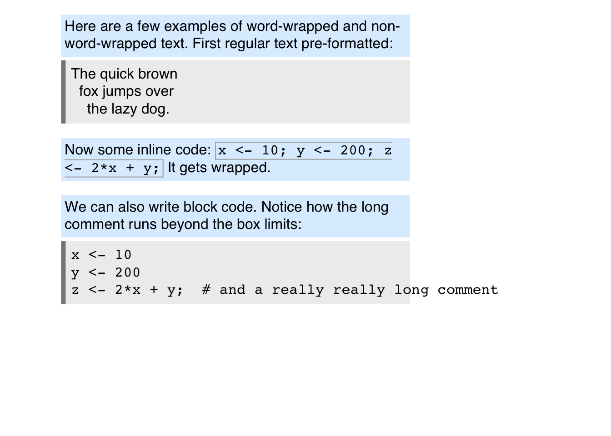
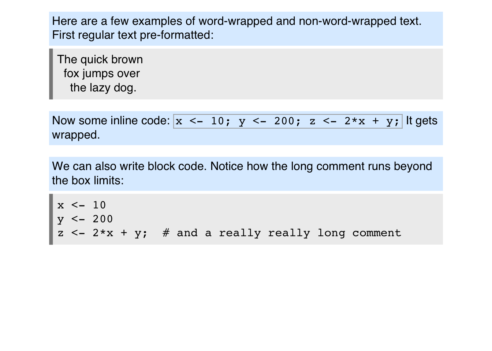

A basic html rendering engine for R, written in Rust. The purpose is not to write a browser, but rather to provide the ability to render simple, static html documents to an R graphics device.
Installation
This package needs to be compiled from source and requires a working Rust toolchain (i.e., Cargo). If you have Cargo up and running, the following should work to install this package:
remotes::install_github("clauswilke/sinab")To get Rust up and running on your system, follow the instructions provided here.
In brief, on macOS or Linux, you simply run the following command in a shell:
curl --proto '=https' --tlsv1.2 -sSf https://sh.rustup.rs | sh(You can also install rustc and cargo through your package manager of choice, though rustup is preferred if you want to do any Rust development work yourself.)
On Windows, things are a little more complicated:
Download
rustup-init.exefrom here: https://win.rustup.rs/-
Then run the following three commands in the Windows command prompt (not powershell):
rustup-init.exe -y --default-host x86_64-pc-windows-gnu --default-toolchain stable set PATH=%PATH%;\%USERPROFILE%\.cargo\bin rustup target add i686-pc-windows-gnu(If the last line gives you trouble, try restarting your command prompt window.)
If you are using Rust regularly on Windows but normally build for the Visual Studio target (x86_64-pc-windows-msvc), then you may have to run the following two commands to successfully build this R package on your machine:
rustup target add x86_64-pc-windows-gnu
rustup target add i686-pc-windows-gnuExamples
Note: This project is in the early proof-of-concept stage. Expect most things to be broken.
The main function provided by this package is html_grob(), which takes as input some Markdown or HTML text and associated CSS and renders it using the grid graphics system. The convenience function draw_html() uses html_grob() to generate the grob and then draws it with grid::grid.draw().
library(sinab)
library(grid)
mdtext <- "
Here are a few examples of word-wrapped and non-word-wrapped text. First
regular text pre-formatted:
<pre>
The quick brown
fox jumps over
the lazy dog.
</pre>
Now some inline code: `x <- 10; y <- 200; z <- 2*x + y;`
It gets wrapped.
We can also write block code. Notice how the long comment runs beyond
the box limits:
x <- 10
y <- 200
z <- 2*x + y; # and a really really long comment
"
css <- '
pre { background-color: #eee;
padding: 6px;
border-left: 5px solid #888; }
p { background-color: #def;
margin: 16px 0px 4px 0px;
padding: 4px; }
code { border: 1px solid #aaa;
padding: 2px; }
pre code { border: none;
padding: 0px; }
'
# can also use `html_grob()` to obtain a grid grob for later drawing
draw_html(
mdtext, css = css,
x = unit(0.1, "npc"), y = unit(1, "npc"), width = unit(4, "inches"),
)
If the grob width is specified as a relative unit, then the grob is reactive and reflows as the graphics window is resized. (Try this example interactively.)
draw_html(
mdtext, css = css,
x = unit(0.1, "npc"), y = unit(1, "npc"), width = unit(0.8, "npc"),
)
Simple markdown-to-html conversion is also implemented:
md_to_html("This is *a* **test**.")
#> [1] "<p>This is <em>a</em> <strong>test</strong>.</p>\n"FAQ
Why is HTML/CSS feature X, Y, or Z not available?
Rendering is done with a purpose-built layouting pipeline, and to date only a small subset of all possible features has been implemented.Will you support Javascript?
Probably not. The goal for Sinab is to render static pages. Interactivity doesn’t work well with R graphics devices.Is MathML supported?
Not at this time.Why is rendering so slow?
The Sinab library itself is actually quite fast. Slowness comes mostly from R graphics devices. In particular, text shaping can be extremely slow. For faster rendering, try one of the graphics devices provided by the ragg library, such asagg_png(). The following benchmark highlights the importance of the graphics device. The agg device is approximately 300 times faster than the quartz device! All this extra time is spent text shaping.
text <- paste(rep("Hello", 50), collapse = " ")
n <- 100L
file <- tempfile(fileext = ".png")
png(file, width = 1920, height = 1920, res = 288, type = "quartz")
microbenchmark::microbenchmark(render_markdown(text), times = n)
#> Unit: milliseconds
#> expr min lq mean median uq max
#> render_markdown(text) 685.3594 704.2026 722.0359 711.3405 720.7934 894.4264
#> neval
#> 100
invisible(dev.off())
ragg::agg_png(file, width = 1920, height = 1920, res = 288)
microbenchmark::microbenchmark(render_markdown(text), times = n)
#> Unit: milliseconds
#> expr min lq mean median uq max
#> render_markdown(text) 2.097382 2.145262 2.400133 2.207823 2.349058 13.56952
#> neval
#> 100
invisible(dev.off())Why aren’t you supporting links (i.e., the
<a>tag)?
This is a limitation of the current R graphics device API. There is simply no way to create a link in an R graphics device. Once this feature gets added, it will be easy to support it in Sinab.Why do my colors look wrong?
Sinab uses the color names defined by CSS, which in some cases are different from the color names that R uses. The most obvious example is probably “green”, which corresponds to #00ff00 in R but #008000 in CSS. If you want to be certain that you get the colors you want, specify them with hex codes in RGB format.
Acknowledgments
The actual HTML/CSS parsing and rendering code is written in Rust, and it draws heavily from software developed for the Servo project. HTML parsing is done with html5ever, CSS parsing is done with cssparser, and CSS selectors are implemented using the selectors crate. DOM, layout, and rendering is using custom code that is in no small part based on the experimental Victor project written by Simon Sapin.
Markdown to HTML conversion is performed through the pulldown-cmark crate, which implements a lightweight Markdown parser that complies with the CommonMark spec.